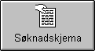

Andersen Consulting is an international technology and management consulting organization whose mission is to help its clients change to be more successful. The organization helps its clients link technology, strategy, processes, and people.
|
 |
Vi søker kvalifiserte medarbeidere med 0-6 års erfaring. Du vil arbeide med utforming og innføring av IT-løsninger i prosjektteam og i nært samarbeid med våre kunder. |
Vi kan tilby:
- Gode arbeids- og lønnsforhold
- Prosjektarbeid
- Varierte arbeidsoppgaver
- Faglig utvikling
- Grundig oppfølging
- Tekniske utviklingsmuligheter
- Knowledge Exhange
- Internasjonalt firma
- Du blir ettertraktet i markedet
- Ungt og uformelt miljø
- Sosiale aktiviteter
- 5 ukers ferie
- Overtidsbetalt med mulighet for avspassering
Dersom du er interessert, ta kontakt med Bjørn Schulstock eller Liv Landmark på telefon.: 22 92 82 00 eller send søknad med attester f.o.m. videregående skole til rekrutteringsavdelingen snarest via brev eller fax. Du kan også melde din interesse via Internett: Søknadskjema.
Arbeidsområdet omfatter rådgivning og vurderinger, samt planlegging og innføring av komplette systemløsninger i samarbeid med kunden.
Vi har egne konsulentgrupper som arbeider innen handel/industri, bank/finans, samt offentlig sektor. I tillegg har vi spesialistgrupper som arbeider med teknologi og forandringsledelse.